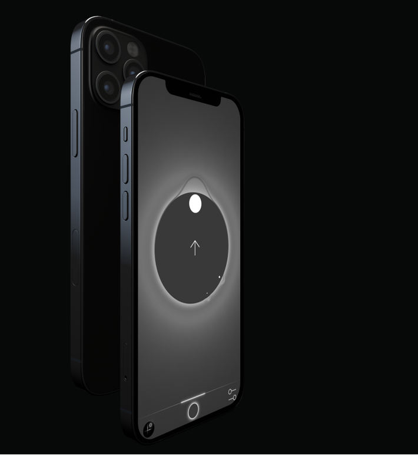
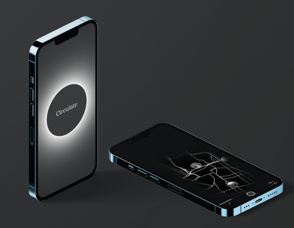

Circulate
The objective of my project was to design a mobile app prototype in Figma that encourages users to explore hidden aspects of Sydney using GPS capabilities, guiding them with a compass-like feature and vibrations to unlock and discover historical images of the city. Following a UX/UI design Process I developed a High-Fidelity prototype and a video showcasing the app in use.
 
Using images from the Lost Sydney archive Facebook group, My idea was to get users to walk around a
virtual map of Sydney using the vibrations from their phone to guide them along a journey to uncover
those forgotten memories at the place they were taken.
This would prompt the users to go on
a new experience exploring the city around them while being rewarded with a historical image to give
context to the city they live in. Some of my early sketches and wireframes below
show the Initial ideas for the users journey and how the interface could look.
I chose to design the app's interface with a clean and simple design that prioritizes the users
immersion with the city around them rather than the app. I drew inspiration for the aesthetics from a wide
range of sources from dark UI designs to minimalistic compass features. The main feature of the app
features a compass like dial that intuitively guides the user towards the lost memories .
To
ensure the app was user friendly this main feature went through several iterations and I conducted user
testing to smooth out any roadblocks in the user journey. Adding little details like light shifting in the
direction of a memory proved to be a success with user comprehension.
The final product was well-received by users, who appreciated the opportunity to explore the city and
discover its hidden gems. The app was particularly effective in creating an experience similar to the
concept of 'Dérive,' encouraging users to look up from their phones and engage with the city around
them. Overall, this project was an exciting opportunity to design a digital experience that encourages users
to explore and discover hidden aspects of Sydney. By prioritizing user experience, simplicity, and
immersion, I was able to create a compelling app prototype that was well-received by users.
Please
view the app in use in the video below